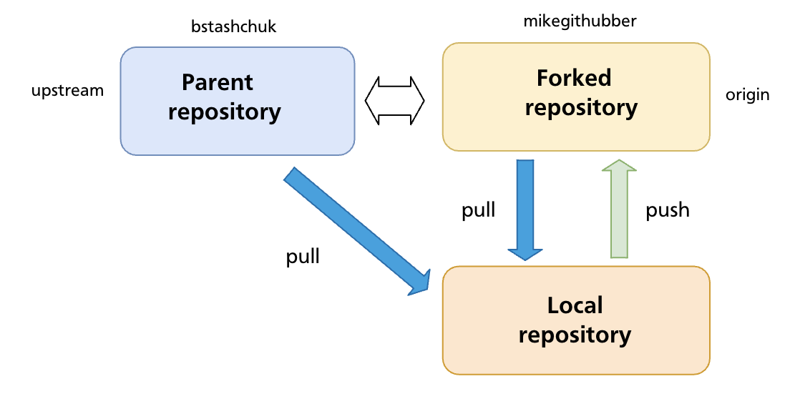

Chapter 19 — Forks & Contributing to Open Source
The chapters so far assumed you have push access to the repository you're working in. Most open-source projects on GitHub work differently: the canonical repository is owned by someone else, and contributors don't have permission to push branches or commits to it directly. Forking is GitHub's mechanism for enabling this kind of contribution — a server-side copy of a repository under your own account that you control completely.
What a Fork Is
A fork is a complete copy of a repository created under your own GitHub account. It is a GitHub-level concept (not a Git concept) — the copy lives on GitHub's servers, not on your machine.

Key properties of a fork:
- You own it — you can push to it freely without needing permission from the original project.
- It starts as an exact copy of the original at the moment of forking, including all branches, commits, and tags.
- It stays connected to the original repository (called upstream) — GitHub tracks the relationship and makes it easy to open pull requests back to it.
- Changes you make in your fork do not appear in the original until a pull request is opened and merged by the upstream maintainers.
Fork vs Clone
These are frequently confused:
| Fork | Clone | |
|---|---|---|
| What it is | Server-side copy on GitHub (under your account) | Local copy on your machine |
| Created by | GitHub UI or gh repo fork |
git clone <url> |
| Push access | You always have it (it's your repo) | Depends on whether you have permission on the remote |
| Relationship to original | GitHub tracks it; PRs can be opened | No formal relationship unless you add a remote |
In the typical open-source workflow you do both: fork the repository on GitHub, then clone your fork to your machine.
The Standard Fork Contribution Workflow
Step 1 — Fork on GitHub
Navigate to the repository you want to contribute to and click Fork. GitHub creates a copy at github.com/<your-username>/<repo-name>.
Using the GitHub CLI:
gh repo fork <owner>/<repo> # fork and optionally clone in one step
gh repo fork <owner>/<repo> --clone # fork and clone immediately
Step 2 — Clone your fork locally
Your fork is automatically set as origin.
Step 3 — Add the upstream remote
Your fork's origin points to your copy. You also need a remote pointing to the original repository so you can pull in future changes:
git remote add upstream git@github.com:<original-owner>/<repo-name>.git
git remote -v
# origin git@github.com:you/repo.git (fetch)
# origin git@github.com:you/repo.git (push)
# upstream git@github.com:original-owner/repo.git (fetch)
# upstream git@github.com:original-owner/repo.git (push)
The convention is to name this remote upstream, though any name works.
Step 4 — Create a feature branch
Never commit directly to main in your fork. Always create a branch for your work:
Working on a branch keeps your main clean so you can always sync it with upstream without conflicts, and lets you work on multiple contributions simultaneously.
Step 5 — Make your changes and commit
Write code, run tests, follow the project's contribution guidelines. Commit your work:
git add src/auth.js tests/auth.test.js
git commit -m "Fix login timeout not respecting remember-me flag"
Keep commits focused and messages descriptive. Some projects require conventional commit format — check the project's CONTRIBUTING.md.
Step 6 — Push the branch to your fork
Step 7 — Open a pull request
On GitHub, navigate to your fork. GitHub will usually display a banner prompting you to open a pull request for the recently pushed branch. Click Compare & pull request, or go to the original repository and open a PR from your-username:fix/login-timeout → original-owner:main.
A good pull request:
- Has a clear title summarising the change
- Explains what was changed and why in the description
- References any related issues (
Closes #123) - Is focused — one logical change per PR
Pull requests are covered in depth in Chapter 20.
Keeping Your Fork Up to Date
The upstream repository continues to receive commits after you forked it. Over time your fork's main falls behind. Before starting new work — and especially before opening a PR — sync your fork with upstream.
Sync via the command line
# Fetch the latest commits from upstream
git fetch upstream
# Switch to your local main
git switch main
# Merge (or rebase) upstream/main into your local main
git merge upstream/main
# or for a linear history:
git rebase upstream/main
# Push the updated main to your fork
git push origin main
Sync via GitHub UI
GitHub provides a Sync fork button on your fork's main page. Click it to pull in upstream changes directly on GitHub without using the command line. After syncing on GitHub, pull the updated main locally:
Rebasing your feature branch onto updated upstream
After syncing main, update your feature branch to include the latest upstream changes:
This replays your feature branch commits on top of the now-updated main, keeping the PR diff clean and merge-conflict-free.
Handling Upstream Changes While a PR Is Open
If the upstream main advances while your pull request is awaiting review, maintainers may ask you to rebase or update your branch:
git fetch upstream
git switch fix/login-timeout
git rebase upstream/main
git push --force-with-lease origin fix/login-timeout
Use --force-with-lease (not --force) to avoid overwriting any changes a collaborator may have pushed to your branch.
Contribution Etiquette
Most active open-source projects document their expectations in a CONTRIBUTING.md file at the repository root. Read it before opening a PR. Common conventions:
- Sign a CLA (Contributor Licence Agreement) — many projects require this before accepting a PR
- One concern per PR — a PR that fixes a bug and adds a feature is harder to review and easier to reject
- Tests — add or update tests to cover your change; a PR that breaks the test suite is unlikely to be merged
- Small diffs — smaller PRs get reviewed faster; prefer several small PRs to one enormous one
- Respond to feedback — review comments are a conversation, not a rejection; address them and push updated commits
Summary
- A fork is a server-side copy of a repository under your own GitHub account; a clone is a local copy on your machine. In the open-source workflow you do both.
- The standard flow: fork → clone → add
upstreamremote → feature branch → commit → push to fork → open PR. - Never commit directly to
mainin your fork — keep it clean for syncing with upstream. - Keep your fork current with
git fetch upstream+git merge upstream/main(or GitHub's Sync fork button), then push toorigin. - Use
git rebase upstream/mainon your feature branch before opening or updating a PR to keep the diff clean. - Read the project's
CONTRIBUTING.mdbefore contributing.
Previous: Chapter 18 — Push, Fetch & Pull · Next: Chapter 20 — Pull Requests